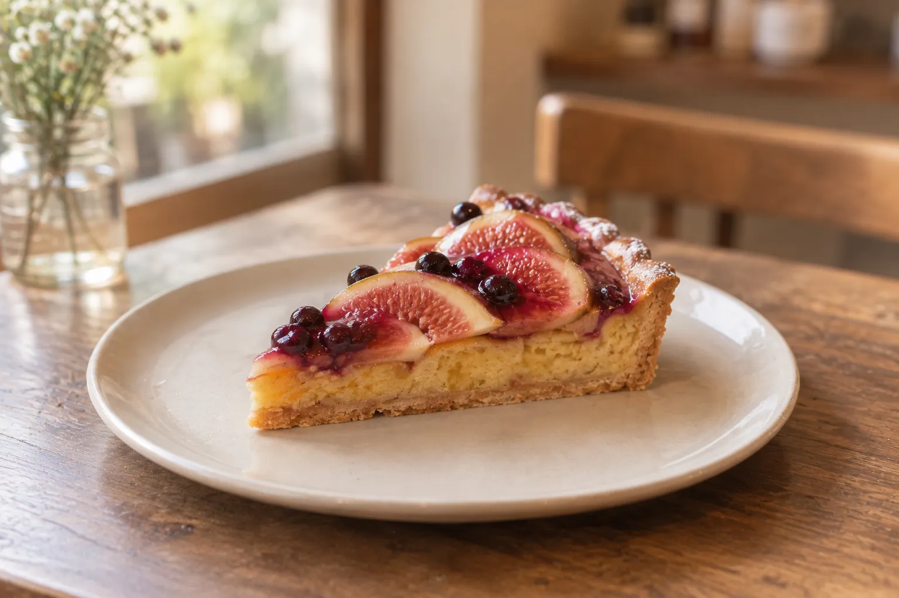
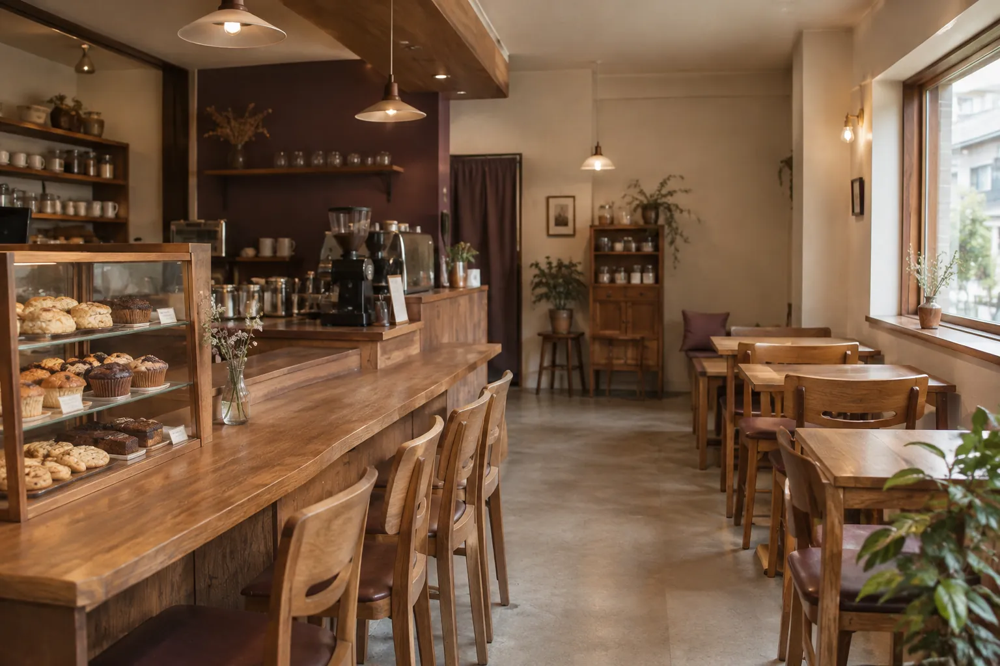
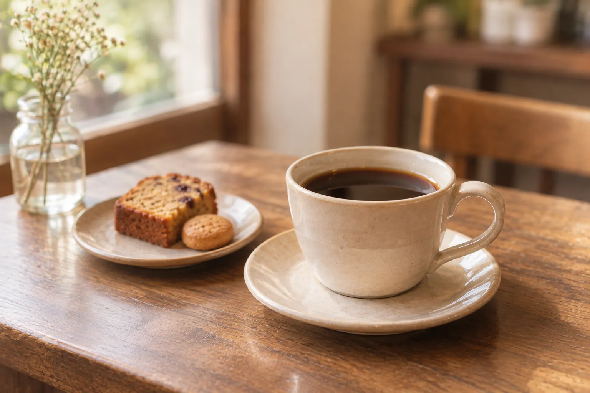
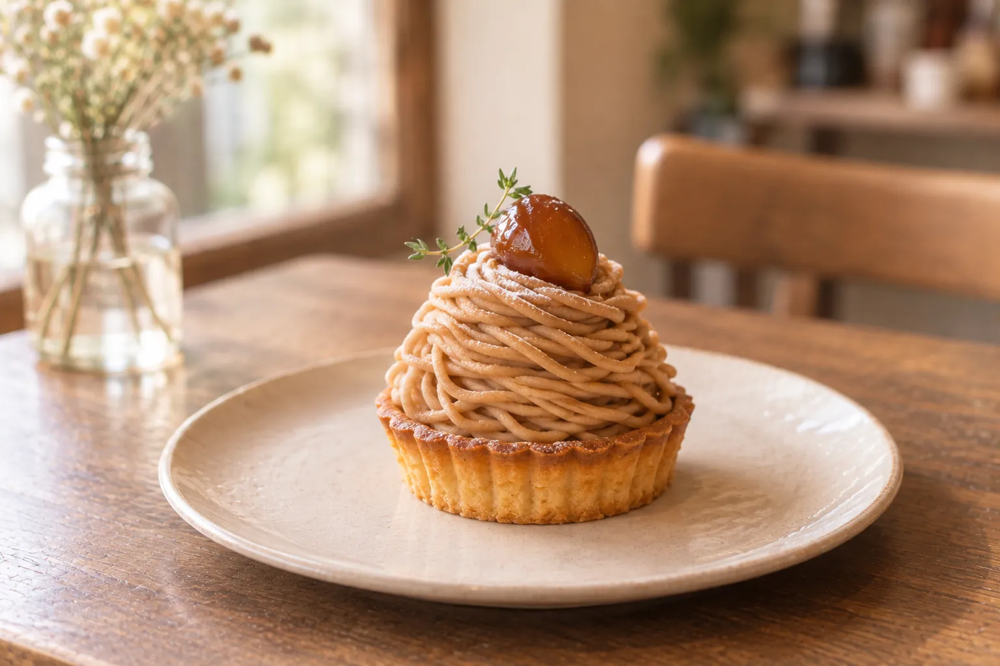

焼き菓子と珈琲
毎朝ひとつずつ焼き上げるタルトと、自家焙煎のコーヒー。駅から少し歩いた住宅街の、10席だけのお店です。

毎日食べても飽きない味を目指しています
北海道産の小麦粉を使い、香ばしさが残るよう低めの温度でじっくり焼いています。
タルトの果物は月ごとに入れ替え。今月は秋らしく、いちじくと和栗です。
コーヒー豆は火曜と金曜に店内で焙煎。焼き菓子に合う中深煎りが中心です。


価格はすべて税込です

お気軽にお立ち寄りください
お誕生日などのホールタルトは、3日前までにお電話か店頭でご予約ください。直径15cm（4〜6名分）から承ります。